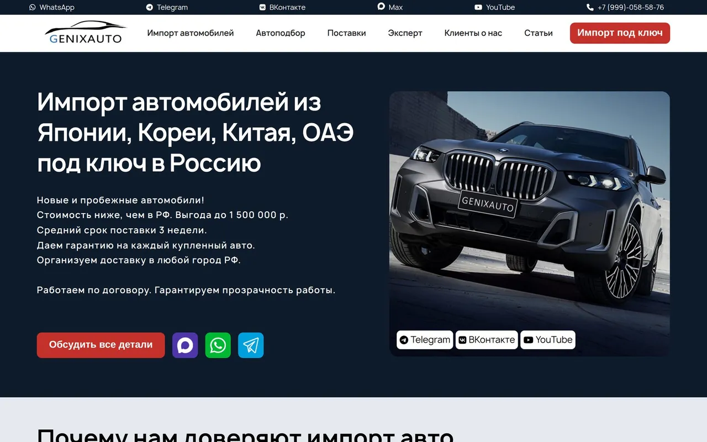
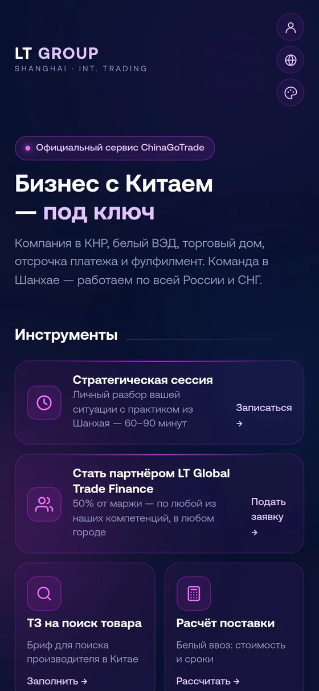
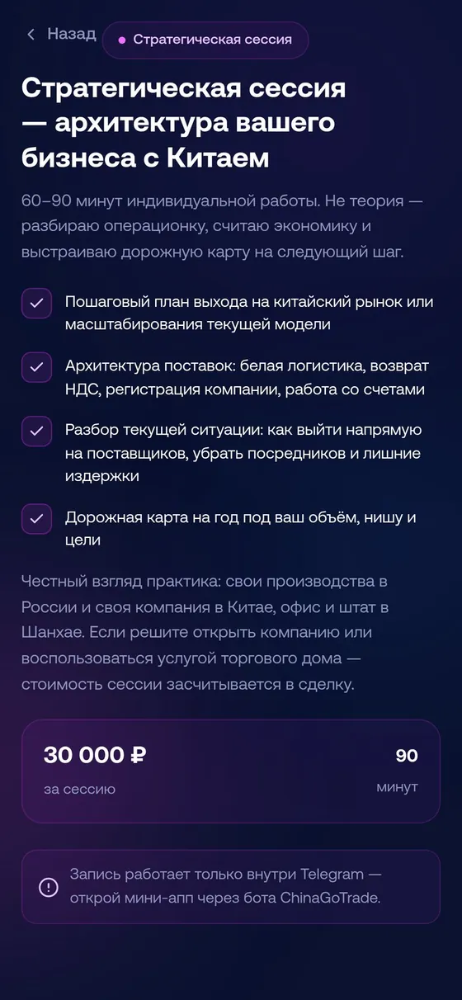

ИИ-менеджер в мессенджерах
Telegram · WhatsApp · MAX · VK · Instagram · чат на сайтеОтвечает клиентам по базе знаний компании в любое время, сам спрашивает имя и телефон, передаёт готового клиента менеджеру.
от 60 000 ₽ + сопровождение
Находим рутинные процессы в вашем бизнесе и передаём их ИИ-агентам.
Сначала разбираемся в ваших процессах — потом подключаем агентов.
Приезжаем, говорим с вами и 2–3 сотрудниками, смотрим, как проходят заявки, переписка и отчёты.
Настраиваем агентов под ваши процессы и подключаем к тому, чем вы уже пользуетесь.
Агент работает дальше, а мы следим за ним и дорабатываем по мере роста задач.
Чаще всего нас зовут с этим. Нет вашей задачи в списке — расскажите, разберёмся.
Отвечает клиентам по базе знаний компании в любое время, сам спрашивает имя и телефон, передаёт готового клиента менеджеру.
Анкета с нужными вопросами. Каждая заявка сразу попадает в CRM и лично ответственному менеджеру.
Несколько слоёв защиты: ловушки для ботов, ограничение частоты, проверка источника, капча. Живые заявки проходят, спам — нет.
Данные из CRM, таблиц и сервисов собираются сами и по расписанию приходят в рабочий чат или на почту.
Собираем компании и контакты под ваш рынок из открытых источников: каталоги, карты, сайты, соцсети. Готовая база — в таблице или сразу в CRM, с регулярным обновлением.
Разбор конкурентов, сценарии, монтаж роликов и публикация — по одной отлаженной системе, а не вручную каждый раз.
Макет и дизайн сайта или приложения в Figma — одним пакетом, чётко по ТЗ. Брендбук: логотип, цвета, шрифты и правила использования. Разработку по готовому дизайну обсуждаем отдельно.
Анимация логотипа, ролики для соцсетей, сайта и презентаций. Стоимость зависит от ТЗ, длины, качества и стиля.
Берёмся за любые автоматизации и внедрения ИИ, создаём сайты и сервисы, защищаем их и сопровождаем. Не нашли свою задачу — расскажите, разберёмся.
Цены — стартовые. Точную стоимость называем после бесплатного разбора, до начала работ. Информация на сайте не является публичной офертой (ст. 437 ГК РФ).
Проекты, которые уже работают у клиентов.



Мы из Владивостока, приезжаем к вам и всё делаем сами — без подрядчиков.
Выясняет, что бизнесу нужно закрыть сейчас и что — в перспективе, и выстраивает процессы под результат. За плечами своя компания по импорту из Южной Кореи — от поиска брендов и поставщиков до склада, маркетплейсов и торговых сетей, — поставки оборудования из Китая. Регулярно работает в Шанхае и Шэньчжэне, проходит MBA в ДВФУ.
«Мне ценнее 20 компаний, с которыми мы пойдём вдолгую, чем тысячи клиентов на один раз»
Собирает ИИ-агентов по базе знаний, Telegram-ботов и Mini App, воронки из Instagram, защиту сайтов и сбор лидов. В ИИ с 2022 года, учится управлению проектами в ВВГУ.
1 место регионального чемпионата «Профессионалы» по технологическому предпринимательству, топ-5 межрегионального финала
Системный и DevOps-инженер, ВВГУ («Информационные технологии и программирование»). Telegram-боты и Mini App, ИИ-агенты, интеграции с Битрикс24 и маркетплейсами, контент-системы с монтажом видео кодом.
Это программа, которая выполняет рутинную работу сотрудника: отвечает клиентам, переносит заявки в CRM, собирает отчёты, напоминает о встречах. Она работает по вашим правилам и передаёт человеку то, что требует решения.
Разбор бесплатный и ни к чему не обязывает. Вы получаете карту рутины: какие процессы можно автоматизировать, сколько времени они занимают сейчас и сколько стоит внедрение. Дальше решаете сами.
Нет. Мы подключаемся к тому, что у вас уже есть: мессенджеры (Telegram, WhatsApp, MAX, VK), Instagram, почта, сайт, Битрикс24, Google Таблицы и Диск. Другие системы смотрим на разборе.
Агент работает в рамках заданных правил, а сложные вопросы передаёт человеку. Вы видите все диалоги и действия агента, а мы регулярно разбираем ошибки и дорабатываем его.
Первые агенты начинают работать примерно через 2 недели после разбора. Если проект большой, срок называем заранее, до начала работ.
Доступы хранятся в одном защищённом месте, а не в переписке. Перед любыми изменениями делаем резервную копию. Код и доступы остаются у вас.